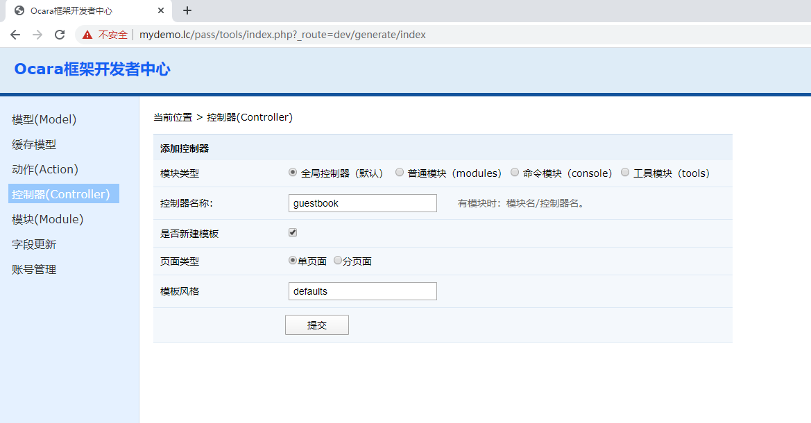
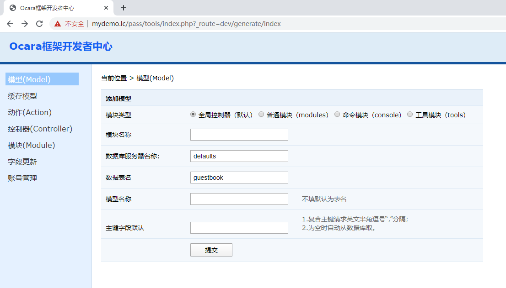
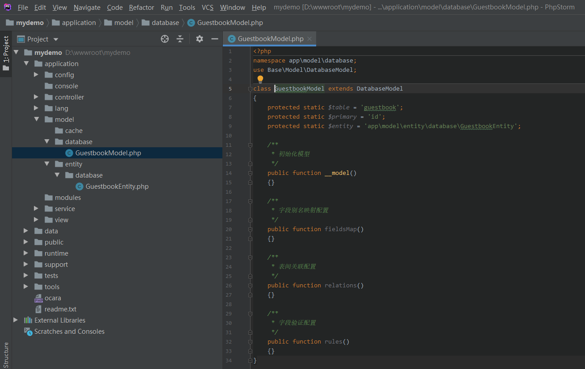

8.2.1 准备工作
1、新建应用
按8.1.1_新建应用新建应用。
2、添加控制器动作
添加前台控制器guestbook， 会自动添加index的动作类IndexAction。

3、新建数据库和表
添加数据库db_guestbook，并设置用户。然后新建留言表guestbook，包括ID，联系手机和留言内容。用utf8mb4编码。
CREATE TABLE `guestbook` (
`id` int(11) unsigned NOT NULL AUTO_INCREMENT COMMENT 'ID',
`telephone` varchar(30) NOT NULL COMMENT '联系电话',
`content` text NOT NULL COMMENT '留言内容',
PRIMARY KEY (`id`)
) ENGINE=InnoDB DEFAULT CHARSET=utf8mb4 COMMENT='留言本'
4、配置数据库
在application/config/database.php中配置数据库，如下实例：
/*
* 数据库连接配置
* 如果是大型分布式数据库，请配置回调函数动态生成配置
*/
'DATABASE' => array(
//默认服务器
'defaults' => array(
'type' => 'mysql', //数据库类型
'host' => '127.0.0.1', //数据库服务器主机和端口，默认端口可以省略
'username' => 'root', //数据库用户名
'password' => 'root', //数据库用户密码
'name' => 'db_guestbook', //数据库名称
'charset' => 'utf8', //数据库编码，如果是utf8不要写成utf-8
'prefix' => '', //表名前缀
'keywords' => array(), //要过滤的SQL关键字
)
)
5、新建Model
进入开发者中心，新建Model，名为guestbook。

成功后查看到目录：

6、修改布局Layout
框架默认在application/view/default/layout目录下面创建了layout文件，其中已经给我们写好了默认代码，showTpl()就是显示当前控制器动作的模板。
这里可以按需求做修改，本例只改个标题title为一个模板变量$title，默认为“留言本实例”，等会介绍设置模板变量。
<!DOCTYPE html PUBLIC "-//W3C//DTD XHTML 1.0 Transitional//EN" "http://www.w3.org/TR/xhtml1/DTD/xhtml1-transitional.dtd">
<html xmlns="http://www.w3.org/1999/xhtml">
<head>
<meta http-equiv="Content-Type" content="text/html; charset=utf-8" />
<title></title>
</head>
<body>
<!-- The head content-->
<div class="header"></div>
<!-- The center content -->
<div class="main">
<?php
$this->showTpl(); //display template file
?>
</div>
<!-- The foot content -->
<div class="footer"></div>
</body>
</html>